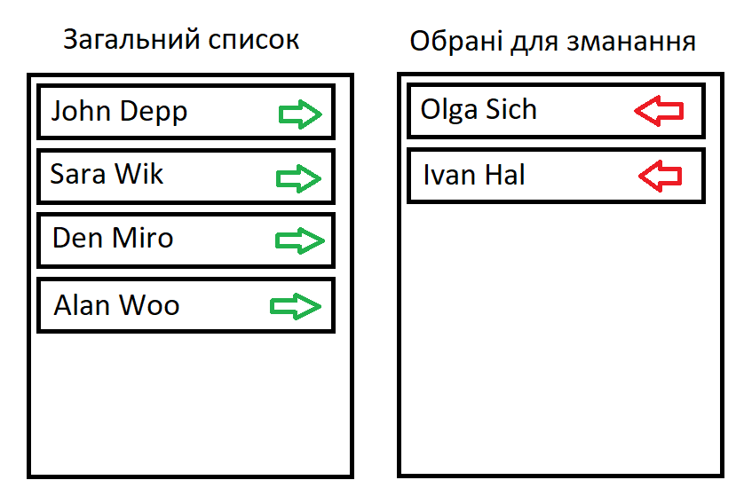

ДЗ №19
-
Відображаємо картки товарів, які користувач може вибирати.
Вибраний товар має зелену рамку (при кліку робити toogle з
класом вибраного елемента)
-
Дано список спортсменів. Потрібно сформувати список тих, які
будуть брати участь у змаганні. При цьому є два стовпці. В
одному відображені всі спортсмени, в іншому – список тих,
хто був вибраний. При натисканні на зелену стрілку спортсмен
переміщається у список для змагань. При натисканні на
червону стрілку спортсмен переміщається у загальний список.

-
Відобразити падаючий сніг. Сніжинка з’являється у верхній
частині екрану (top =0) і з випадковою швидкістю рухається
вниз (у setInterval викликати метод, у якому додавати крок
до top). Як тільки сніжинка досягає нижньої частини екрану
(top>maxTop) вона знову повинна з’явитись у верхній частині
екрану (top=0).